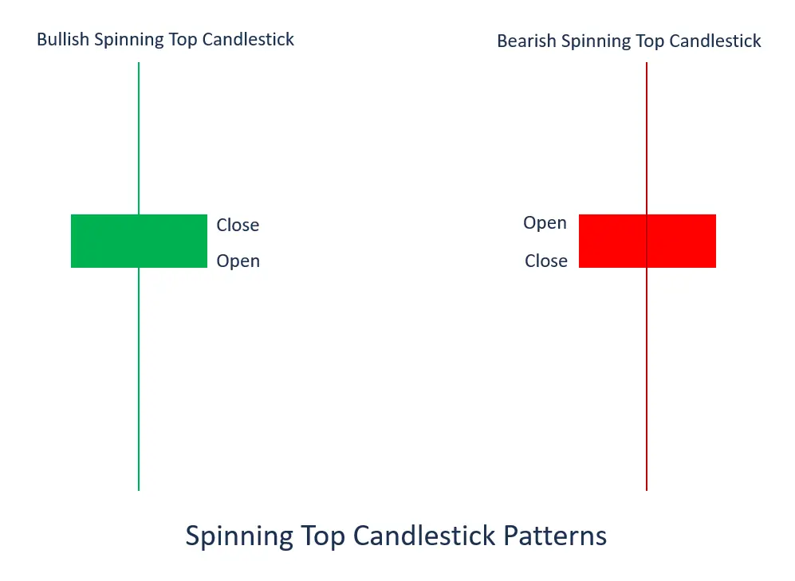
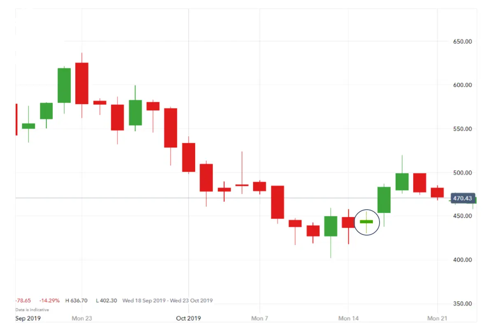

Spinning Top Candlestick क्या है?

एक स्पिनिंग टॉप कैंडलस्टिक एक पैटर्न है जिसमें एक ऊपरी और एक निचली लंबी छड़ी के बीच एक छोटी बॉडी होती है। स्पिनिंग टॉप एक ऐसी स्थिति को दर्शाती है जहाँ ना बिक्रेता ना खरीददार कुछ भी अधिग्रहण नहीं कर पाए हैं। इससे बराबर खुलने और बंद होने वाले मूल्य इकाइयाँ होती हैं।
स्पिनिंग टॉप कैंडलस्टिक के बनने से एक मूल्य घटना के बाद अगर यह होता है, तो मूल्य पलटने की संभावना का निर्धारण करने में मदद मिलती है। मार्केट ट्रेंड में छोटी विविधता के कारण, कैंडलस्टिक को एक बार फिर शुरू करने वाले पैटर्न के रूप में संदर्भित किया जाता है।

| Spinning top chart pattern example |
चलते हुए मान लें कि आप Aston Martin के शेयर मूल्य का अनुसरण कर रहे हैं, जो ट्रेडिंग दिन को 442 पी पी से खोलता है। बेचने वाले बाजार में शेयर की कीमत चलना शुरू होती है, जो 430 पी पी की निम्नतम कीमत तक पहुंचती है। खरीददार वापस आते हैं, और शेयर की कीमत 455 पी पी की उच्चतम स्तर तक पहुंचती है, इसके बाद बाजार निश्चित हो जाता है और शेयर की कीमत 445 पी पी पर बंद होती है। यह एक बुलिश स्पिनिंग टॉप कैंडलस्टिक बनाता है, जैसा नीचे दिखाया गया है।

Summary
- ड्रेगनफ्लाई डोजी एक सिक्योरिटी मूल्य में उलटी लकीर के संकेत को दर्शाती है जहां खुले, बंद और उच्च मूल्य लगभग समान होते हैं।
- एक उच्चतम रुझान के बाद, ड्रेगनफ्लाई डोजी एक मूल्य गिरावट के संभावित संकेत को दर्शाती है, जो पुष्टि के लिए पुष्टि कर सकता है यदि अगली कैंडलस्टिक नीचे जाती है।
- नीचे के रुझान के बाद, ड्रेगनफ्लाई डोजी संभावित मूल्य वृद्धि का संकेत देता है यदि पुष्टि के लिए उपयुक्त कैंडलस्टिक ऊपर जाती है।
| Spinning top candlestick pattern summed up |
- स्पिनिंग टॉप कैंडलस्टिक चार्ट पैटर्न एक ऐसी बनावट होती है जब किसी संपत्ति की कीमत एक ही स्तर पर खुलती है और बंद होती है - यह आराम और समेकन का संकेत होता है।
- स्पिनिंग टॉप पैटर्न के दो प्रकार होते हैं - बुलिश स्पिनिंग टॉप और बियरिश स्पिनिंग टॉप।
- एक स्पिनिंग टॉप कैंडलस्टिक तब बनती है जब मार्केट ने ऊपरी और निचले विकल्पों का अनुसरण कर लिया होता है लेकिन फिर भी बंद होने के समय खुले से ज्यादा कुछ खास बदलाव नहीं होता है।
- जब आप स्पिनिंग टॉप कैंडलस्टिक चार्ट पैटर्न देखते हैं, तो आप स्प्रेड बेट या सीएफडी जैसे डेरिवेटिव का उपयोग करके ट्रेड कर सकते हैं।
- डेरिवेटिव के साथ, आप लंबा या शॉर्ट जा सकते हैं क्योंकि आपके पास अंडरलाइंग संपत्ति का मालिकाना नहीं होता है।
सजीव कैंडलस्टिक्स के उदाहरण: